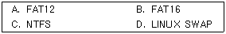

네트워크관리사-1급 (2006-09-24 기출문제)
1과목: TCP/IP
1. OSI 참조모델의 트랜스포트 계층(Transport Layer)에 대응하는 TCP/IP 프로토콜은?
- Transmission Control Protocol
- Internet Protocol
- Address Resolution Protocol
- Simple Network Management Protocol
(정답률: 알수없음)

2. TCP/IP에 대한 설명으로 옳지 않은 것은?
- TCP는 전송 및 에러검출을 담당한다.
- IP 패킷에는 크기의 제한이 있다.
- TCP는 한 번에 많은 상대에게 데이터를 전달하고자 할 때 사용된다.
- IP는 패킷을 유실 또는 왜곡시키기도 한다.
(정답률: 알수없음)
3. IP Address 체계로 옳지 않은 것은?
- 인터넷은 TCP/IP 프로토콜 기반으로 IP Address 체계를 따른다.
- IPv4의 주소 체계는 4 Octet로 구성되며, 각 부분은 ‘·’으로 구분된다.
- IP Address는 2대 이상의 컴퓨터가 동시에 공유할 수 있다.
- IP Address는 네트워크의 크기에 따라 적용 가능하도록 5개의 Class로 나뉘며, 일반 Host는 주로 A, B, C Class가 사용된다.
(정답률: 알수없음)
4. 다음 중 가장 많은 Network 수를 제공하는 Class는?
- A Class
- B Class
- C Class
- D Class
(정답률: 알수없음)
5. SMTP 명령어들에 대한 설명 중 옳지 않은 것은?
- RCPT : 우편 데이터의 개별적인 수신자를 식별한다.
- RSET : 현재 메일 처리를 중지하고 모든 저장된 정보를 폐기한다.
- SOML : 사용자의 로그인 여부와 상관없이 메시지를 전송한다.
- EXPN : 수신자 SMTP에게 메일링 리스트를 식별하는 논술을 확인하고 리스트의 멤버십을 리턴 할 것을 요구한다.
(정답률: 알수없음)
6. IP에 대한 설명으로 옳지 않은 것은?
- 32bit 주소 체계를 갖는 IPv4의 주소 부족으로 IPv6가 등장했다.
- IPv4에서는 Flow Labeling 기능과 인증, 프라이버시를 제공한다.
- IPv6에서는 Next Header가 있어서 확장된 헤더를 가리키도록 하고 있다.
- IPv6에서는 근원지와 목적지 주소할당을 위해 128bit를 가진다.
(정답률: 알수없음)
7. IP의 특성으로 옳지 않은 것은?
- 최대 패킷의 크기는 65,535Byte이다.
- 연결 지향 프로토콜이다.
- 인터넷 데이터그램을 송신지로부터 수신지로 전송하는데 필요한 기능을 제공한다.
- 호스트의 주소 지정과 패킷 절단의 기능을 담당한다.
(정답률: 알수없음)
8. TCP에 대한 설명 중 올바른 것은?
- IP는 데이터의 배달을 관장하고, TCP는 데이터 패킷을 추적 관리한다.
- 비연결 지향형 프로토콜이다.
- OSI 통신 모델에서 세션 계층에 속한다.
- 데이터 전송에 있어 신뢰성을 제공하지 않는다.
(정답률: 알수없음)
9. UDP에 대한 설명 중 옳지 않은 것은?
- 가상선로 개념이 없는 비연결형 프로토콜이다.
- TCP보다 전송속도가 느리다.
- 각 사용자는 16비트의 포트번호를 할당받는다.
- 데이터전송이 블록 단위이다.
(정답률: 알수없음)
10. ARP와 RARP에 대한 설명 중 옳지 않은 것은?
- ARP와 RARP는 전달 계층(Transport Layer)에서 동작하며 인터넷 주소와 물리적 하드웨어 주소를 변환하는데 관여한다.
- ARP는 IP 데이터그램을 정확한 목적지 호스트로 보내기 위해 IP에 의해 보조적으로 사용되는 프로토콜이다.
- RARP는 로컬 디스크가 없는 네트워크상에 연결된 시스템에 사용된다.
- RARP는 브로드캐스팅을 통해 해당 네트워크 주소에 대응하는 하드웨어의 실제 주소를 얻는다.
(정답률: 알수없음)
11. ICMP(Internet Control Message Protocol)의 기능으로 옳지 않은 것은?
- 에러 보고기능
- 도착 가능 검사기능
- 혼잡 제어기능
- 송신측 경로 변경기능
(정답률: 알수없음)
12. Telnet에서 사용 가능한 기본 명령어로 옳지 않은 것은?
- open
- quit
- status
- user
(정답률: 알수없음)
13. 원격지 호스트에 로그인 하지 않고 원격지 호스트 상에 존재하는 특정 명령어를 실행할 수 있도록 하는 것은?
- rsh
- rcp
- rlogin
- rhost
(정답률: 50%)
14. 다음 TCP/IP 응용 모듈 프로토콜들 중 하이퍼텍스트 전송을 맡고 있는 것은?
- Telnet
- FTP
- HTTP
- SMTP
(정답률: 알수없음)
15. FTP 서비스에서 파일을 송수신하기 전에 이 명령어를 내려주면 각 블록이 전송될 때 각 블록마다 ‘#’ 표시가 나타나 손쉽게 전송여부를 확인할 수 있는 명령은?
- hash
- binary
- mls
- trace
(정답률: 알수없음)
16. DNS 메시지의 질의 섹션에 대한 영역 중 해당되지 않는 것은?
- QNAME
- QTYPE
- QCLASS
- QLIST
(정답률: 알수없음)
2과목: 네트워크 일반
17. TFTP에 대한 설명 중 옳지 않은 것은?
- 시작지 호스트는 잘 받았다는 통지 메시지가 올 때까지 버퍼에 저장한다.
- 중요도는 떨어지지만 신속한 전송이 요구되는 파일 전송에 효과적이다.
- 모든 데이터는 512바이트로 된 고정된 길이의 패킷으로 되어 있다.
- 보호등급을 추가하여 데이터 스트림의 위아래로 TCP 체크섬이 있게 한다.
(정답률: 알수없음)
18. ARQ 중 에러가 발생한 블록 이후의 모든 블록을 재전송하는 방식은?
- Go-back-N ARQ
- Stop-and-Wait ARQ
- Selective ARQ
- Adaptive ARQ
(정답률: 알수없음)
19. 다음 중 전진 오류 수정 방법은?
- 패리티 검사
- 순화중복 검사
- 해밍코드
- ARQ
(정답률: 알수없음)
20. 다중화(Multiplexing)의 장점으로 옳지 않은 것은?
- 전송 효율 극대화
- 전송설비 투자비용 절감
- 통신 회선설비의 단순화
- 신호처리의 단순화
(정답률: 알수없음)
21. 컴퓨터 통신망을 구축함으로써 얻을 수 있는 장점으로 옳지 않은 것은?
- 자원 공유(Resource Sharing)
- 고 신뢰성(High Reliability)
- 비용 효율성(Cost Effective)
- 공간 절약성(Space Saving)
(정답률: 알수없음)
22. OSI 7 Layer 중에서 응용프로그램이 네트워크 자원을 사용할 수 있는 통로를 제공 해주는 역할을 담당하는 Layer는?
- Application Layer
- Session Layer
- Transport Layer
- Presentation Layer
(정답률: 알수없음)
23. OSI 모델과 각각의 Layer에 맞는 Protocol을 연결한 것 중 옳지 않은 것은?
- Application : FTP, SNMP, Telnet
- Transport : TCP, SPX, UDP
- DataLink : NetBIOS, NetBEUI
- Network : ARP, DDP, IPX, IP
(정답률: 알수없음)
24. 다음 중 잘못 연결된 것은?
- Unicast - 단일 송신자와 단일 수신자 간의 통신
- Multicast - 다중 송신자와 단일 수신자 간의 통신
- Anycast - 단일 송신자와 가장 가까이 있는 수신자 그룹간의 통신
- Broadcast - 그룹의 모든 구성원들에 정보를 일방적으로 전송
(정답률: 알수없음)
25. LAN에 관한 특성으로 옳지 않은 것은?
- LAN에서의 전송속도는 10Mbps~100Mbps이다.
- LAN을 설치하는데 브리지(Bridge)가 반드시 필요하다.
- Ethernet, Token Ring, Token Bus 방식 등을 사용한다.
- 수 km 범위 이내 한정된 지역에서 사용가능하다.
(정답률: 알수없음)
26. Bandwidth 용량에 거의 제한을 받지 않는 Cell-Based 기술을 이용하는 방식은?
- CDDI
- 100BASE-T
- ATM
- Gigabit Ethernet
(정답률: 알수없음)
27. 초광대역(UWB: Ultra Wide Band)무선통신에 대한 설명으로 옳지 않은 것은?
- 근거리에서 100M∼400Mbps의 전송속도를 내는 현존 무선 기술 중 가장 빠른 속도를 가진다.
- 2∼10GHz의 고주파대역을 활용하는 무선 통신 기술이다.
- 극초단파를 이용해 데이터를 교환하는 기술로 전송거리가 10M 안팎으로 짧지만 전송속도가 빠르다.
- 홈네트워킹, 유비쿼터스 환경을 구현할 무선통신기술로 주목 받고 있지만 전력소모가 큰 단점이 있다.
(정답률: 알수없음)
3과목: NOS
28. 프린터를 추가하고 공유하기 위해 사용할 수 없는 계정은?
- Administrator
- Server Operator
- Printer Operator
- Replicator
(정답률: 알수없음)
29. Windows 2000 Server에서 “icqa.or.kr”과 “test.icqa.or.kr”을 하나의 Server에서 서비스를 하기 위한 설정 과정으로 옳지 않은 것은?
- “icqa.or.kr”과 “test.icqa.or.kr”을 DNS에 설정 후, 기존서버 NIC에 새로운 NIC을 추가하고, 각각 해당 도메인명의 IP를 설정한 후, IIS에서 설정한다.
- “icqa.or.kr”과 “test.icqa.or.kr”을 DNS에 설정 후, 서버 한 개의 NIC에 각각의 IP를 등록한 후, IIS에서 설정한다.
- “test.icqa.or.kr”은 DNS에서 A레코드를 추가한 후, 해당 IP Address가 설정된 서버의 IIS에서 설정한다.
- DNS 서버에서 단일 IP Address를 설정한 후, 해당 IIS 서버의 호스트헤더를 각각 등록한다.
(정답률: 알수없음)
30. Windows 2000 Server의 DNS 설치에 대한 설명 중 옳지 않은 것은?
- DNS 서버를 설치하기 위해서는 고정 IP Address를 가져야 한다.
- Administrator 또는 관리자 권한이 있는 계정으로 로그온 한다.
- Windows 2000 Server 설치 시 자동으로 설치된다.
- Active Directory를 사용하기 위해서는 반드시 설치되어야한다.
(정답률: 알수없음)
31. Windows 2000 Server에서 DNS와 비슷하게 NetBIOS 이름을 IP Address에 맵핑하는 기능을 지원하는 서비스는?
- WINS
- HTTP
- Proxy
- SNMP
(정답률: 알수없음)
32. Windows 2000 Server에서 DHCP를 사용해 IP Address가 동적으로 할당되도록 하였다. 필요에 의해 특정 클라이언트가 특정 IP Address를 할당 받게 하기 위해서는 DHCP 설정의 어느 메뉴 항목에서 설정해야 하는가?
- 주소 풀
- 주소 임대
- 예약
- 범위 옵션
(정답률: 알수없음)
33. Windows 2000 Server에서 파일 시스템의 성능 향상을 위해 연속된 Sector에 데이터를 쓰도록 하는 도구는?
- 디스크 조각 모음
- Scandisk
- Fdisk
- NDD
(정답률: 알수없음)
34. 다음 중 Linux에서 지원하는 파티션의 종류는?

- A, B, D만 지원
- B, C, D만 지원
- B, D만 지원
- A, B, C, D 모두 지원
(정답률: 알수없음)
35. Linux 시스템 담당자가, 로그인 암호를 잊어버린 사용자의 암호를 복구해 주는 방법으로 가장 적절한 것은?
- “/etc/passwd”에서 암호를 찾아내 알려준다.
- “/etc/passwd”에서 두 번째 필드를 지우고 passwd 명령으로 재 지정한다.
- “/etc/passwd”에서 Login_Shell을 변경한다.
- “/etc/passwd”에서 User_ID를 변경한다.
(정답률: 알수없음)
36. Linux에서 "hostname" 명령어에 대한 옵션 설명 중 옳지 않은 것은?
- -v : 호스트 네임 출력
- -d : 호스트 네임 변경
- -a : 호스트 네임에 대한 별칭 이름 출력
- -i : 호스트 네임에 대한 IP Address 출력
(정답률: 알수없음)
37. 사용자 ID를 추가하려고 할 때 만들 수 없는 것은?
- useradd ICQA
- useradd icqa12
- useradd icqa34net
- useradd 21network
(정답률: 알수없음)
38. Linux 시스템의 VI 옵션 중에서 화면에 보이는 내용들의 "행 번호"를 나타내고자 할 때 사용해야 할 명령어는?
- showmode
- autoindent
- number
- pattern
(정답률: 알수없음)
39. SQL 클라이언트 구성요소에 속하며 SQL 문장을 쉽게 입력하고, 얻은 결과를 분석할 수 있는 인터페이스를 가지고 있는 도구는?
- 엔터프라이즈 관리자
- 쿼리 분석기
- SQL 서비스 관리자
- SQL 프로필러
(정답률: 알수없음)
40. 다음 중 Windows 2000 Server에서 현재 네트워크 상에 전송되는 프레임을 캡쳐하여 네트워크 문제를 해결하려고 할 때 필요한 툴은?
- 네트워크 모니터
- 네트워크 분석기
- 케이블 테스터
- TDR
(정답률: 알수없음)
41. BIND 관련 설정 파일에 대한 설명으로 옳지 않은 것은?
- named.conf는 존(Zone) 파일의 위치, 접근 권한에 대한 설정, 설정할 도메인의 종류와 각 도메인에 대한 설정 파일 등에 대한 정보를 가지고 있다.
- BIND의 설정파일은 named.conf 파일과 존 파일들로 구분된다.
- named.conf 파일 수정시 주석은 "//"을 사용하고, 존 파일 수정시 주석은 '#'을 사용한다.
- named.conf 파일에 사용하는 도메인을 등록하고 그 도메인에 대한 세부 설정은 존 파일에 수행한다.
(정답률: 알수없음)
42. Linux 시스템을 웹 서버로 운영하려고 한다. 이때 웹 서버로 운영하기 위해 설치해야 할 것은?
- BIND
- Apache
- MySQL
- Samba
(정답률: 알수없음)
43. DNS를 설치하기 위한 named.zone 파일의 SOA 레코드에 대한 설명으로 옳지 않은 것은?
- Serial : 타 네임서버가 이 정보를 유지하는 최소 유효기간
- Refresh : Primary 네임서버의 Zone 데이터베이스 수정 여부를 검사하는 주기
- Retry : Secondary 네임 서버에서 Primary 네임서버로 접속이 안 될 때 재시도를 요청하는 주기
- Expire : Primary 네임서버 정보의 신임 기간
(정답률: 알수없음)
44. SAMBA에서 설정파일 관리 및 운영관리 등을 위해 제공되는 웹기반의 관리 툴은?
- smdd
- nmdb
- swat
- xf86config
(정답률: 알수없음)
45. 도메인 네임의 설명으로 옳지 않은 것은?
- 도메인 네임은 영어나 숫자로 시작하여야 하며 하이픈(-)으로 끝날 수 있다.
- 영문자의 대/소문자 구별이 없다.
- 어떤 기관이나 단체의 네트워크에 속한 컴퓨터의 이름이나 조직의 이름을 말한다.
- 개인 도메인 네임 작성규칙은 3자부터 63자까지이다.
(정답률: 알수없음)
4과목: 네트워크 운용기기
46. LAN to LAN 연결에서 계층 4 이상에서 서로 다른 LAN을 연결하려고 할 때 필요한 장치는?
- Repeater
- Gateway
- Bridge
- Router
(정답률: 알수없음)
47. Distance Vector 프로토콜에서 루핑 방지를 위해 사용되는 기술로 옳지 않은 것은?
- SPF(Shortest Path First)
- Split-Horizon
- Poison & Poison - Reverssse
- Holddown Timer
(정답률: 알수없음)
48. Repeater의 특징으로 옳지 않은 것은?
- 회선상의 전자기 또는 광학 신호를 증폭하여 네트워크의 길이를 확장할 때 쓰인다.
- OSI 7 Layer 중 물리적 계층에 해당하며 두 개의 포트를 가지고 있어 한쪽 포트로 들어온 신호를 반대 포트로 전송한다.
- Hub에 Repeater 회로가 내장되어 Repeater를 대신하여 사용하는 경우가 있다.
- 단일 네트워크에는 여러 대의 Repeater를 사용 할 수가 없다.
(정답률: 알수없음)
49. 두 개 이상의 동일한 LAN 사이를 연결하여 네트워크 범위를 확장하고, 스테이션 간의 거리를 확장해 주는 네트워크 장치는?
- Repeater
- Bridge
- Router
- Gateway
(정답률: 알수없음)
50. 전송방식별 전송매체에 대한 분류 중 잘못 연결된 것은?
- 10Base5 - 동축 Thick 케이블
- 10Base2 - 동축 Thin 케이블
- 10BaseT - Fiber Optic 케이블
- 100BaseTX - UTP 케이블
(정답률: 알수없음)
5과목: 정보보호개론
51. 정보에 대한 안전 확인으로 데이터가 전송 도중 내용이 불법적으로 변경되었는가를 확인하는 기능으로, 데이터의 불법적인 변경을 막기 위해 데이터 인증 코드를 데이터와 함께 전송하는 기법은?
- 무결성
- 부인봉쇄
- 접근제어
- 인증
(정답률: 알수없음)
52. Windows 2000 Sever에서 지원하는 PPTP(Point to Point Tunneling Protocol)에 대한 설명으로 올바른 것은?
- PPTP 헤더 압축을 지원한다.
- IPsec를 사용하지 않으면 터널인증을 지원한다.
- PPP 암호화를 지원하지 않는다.
- IP 기반 네트워크에서만 사용가능하다.
(정답률: 알수없음)
53. 해킹도구 중 알려진 취약점을 알아보는 스캐너의 종류로 옳지 않은 것은?
- SAINT
- MSCAN
- ISS
- Squid
(정답률: 알수없음)
54. 방화벽의 일반적인 구성 요소라고 볼 수 없는 것은?
- 배스천 호스트(Bastion Host)
- 방어선 네트워크(Perimeter Network)
- 프락시 서버(Proxy Server)
- 스크리닝 라우터(Screening Router)
(정답률: 알수없음)
55. 웹 브라우저, 웹 서버 간에 데이터를 안전하게 교환하기 위한 프로토콜로서, 웹 제품뿐 아니라 FTP나 Telnet 등 다른 TCP/IP 애플리케이션에 적용할 수 있는 보안기술은?
- SET
- SSL
- S/MIME
- PGP
(정답률: 알수없음)
56. 디지털 서명 표준 방법으로 옳지 않은 것은?
- DSS
- DES
- FIPS
- NIST
(정답률: 알수없음)
57. 정보 보호 표준 용어 중 설명으로 올바른 것은?
- 복호(Decipherment) : 평문을 암호화 알고리즘을 이용하여 암호화하는 것
- 공개키(Public Key) : 정보 시스템을 사용하기 전 또는 정보를 전달할 때, 사용자를 확인하기 위해 부여된 보안 번호
- 발신자 확인(Non-Repudiation) : 암호문의 전송자를 확인하고 메시지 내용이 제대로 전달되었는지를 확인하는 과정
- 비밀 보장(Confidentiality) : 권한이 없는 사용자들이 이용할 수 없도록 데이터를 숨기는 것
(정답률: 알수없음)
58. 익명성이 보장되는 E-Cash는?
- VisaCash
- Porta Moedas
- Mondex
- GeldKarte
(정답률: 알수없음)
59. 다음 시스템의 보안 관리 중 기술적 보안과 가장 관계가 없는 것은?
- 관리자 로그 구성
- 사용자들의 요구사항 처리
- 각 파일에 대한 수행 권한 부여
- 침입차단 시스템에 의한 보안
(정답률: 알수없음)
60. 침입탐지시스템(IDS: Intrusion Detection System)에 대한 설명으로 옳지 않은 것은?
- IDS는 공격의 증거를 찾기 위해 네트워크 트래픽을 분석하고, 침해 여부를 보기 위하여 액세스 로그들을 조사하고 파일들을 분석하기도 한다.
- IDS의 형태로는 NIDS, HIDS, SIV, LFM 등이 있다.
- IDS의 한 형태인 HIDS는 중요한 시스템 파일의 흔적을 유지하고 변경되었는지 감시한다.
- IDS는 위조된 서비스를 제공하여 해커를 유인, 혼란스럽게 하는 가짜 네트워크인 Honeypot으로 개념을 확장하고 있다.
(정답률: 알수없음)